存储基础知识
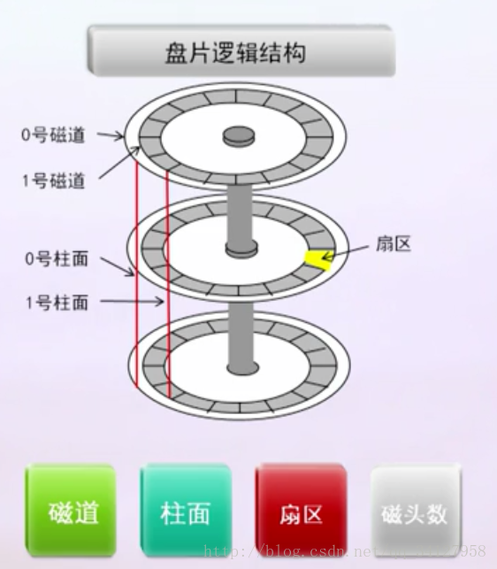
硬盘对外提供的接口
ATA（高级技术附加装置）：ATA硬盘常被称为IDE硬盘，ATA接口为并行ATA技术，最大传输133Mbps;

SCSI(Small Computer System Interface）小型计算机系统接口:当前主流Ultra320(320Mbps),适应性广、高性能、支持热插拔，但价格昂贵，安装复杂；

SATA:串行方式传输，最低为150Mbps，第二代300Mbps，SATA硬盘采用点对点连接方式，支持热插拔，即插即用。

SAS：串行SCSI接口，在SCSI基础上支持点对点、全双工、
双端口，速率每路600Mbps，实现了与SATA的互操作，在传输速率，抗干扰性方面强于SCSI，价格相对较高；

FC（光纤通道接口）：
FC硬盘采用FC-AL（Fiber Channel Arbitrated Loop）光纤通道仲裁环，是一种双端口的串行存储接口，支持全双工工作方式，利用类似SATA/SAS所用的4芯连接，提供一种单环拓扑结构，一个控制器能访问126个硬盘。
能长距离传输，传输带宽高、通用性强。但价格昂贵，组件复杂。

NL SAS:采用SAS接口、SATA盘体，也叫近线SAS.

硬盘接口比较

条带
条带化技术就是一种自动的将 I/O 的负载均衡到多个物理磁盘上的技术，条带化技术就是将一块连续的数据分成很多小部分并把他们分别存储到不同磁盘上去。这就能使多个进程同时访问数据的多个不同部分而不会造成磁盘冲突，而且在需要对这种数据进行顺序访问的时候可以获得最大程度上的 I/O 并行能力，从而获得非常好的性能。条带化后，条带卷所能提供的速度比单个盘所能提供的速度要快很多，由于现在存储技术成熟，大多数系统都采用条带化来实现系统的I/O负载分担，如果OS有LVM软件或者硬件条带设备，决定因素是条带深度(stripe depth)和条带宽度(stripe width)。
条带深度：指的是条带的大小，也叫条带大小。指写在每块磁盘上的条带数据块的大小。
条带宽度：指同时可以并发读或写的条带数量。这个数量等于RAID中的物理硬盘数量。例如一个经过条带化的，具有4块物理硬盘的阵列的条带宽度就是4。增加条带宽度，可以增加阵列的读写性能。道理很明显，增加更多的硬盘，也就增加了可以同时并发读或写的条带数量。在其他条件一样的前提下，一个由8块18G硬盘组成的阵列相比一个由4块36G硬盘组成的阵列具有更高的传输性能。
分条
同一磁盘阵列中多个磁盘驱动器上相同位置（或者说编号）的条带。
RAID
Redundant Array of Independent Disks，独立冗余磁盘阵列，简称磁盘阵列。
RAID0
条带化存储，无校验。因此读写性能最高，然而最不安全。至少使用两块磁盘。
RAID1
条带化存储，数据镜像，无校验，因此允许单个磁盘故障。至少两块磁盘。
RAID3
条带化存储，校验信息存放在专用硬盘，当一个硬盘故障可通过异或校验恢复数据。但因为校验信息存放在专用硬盘造成此硬盘压力极大，也成为RAID3数据写入的瓶颈，为各个RAID组写入最慢。至少3块硬盘。
RAID5
RAID3的升级版，将校验信息均匀分布在所有硬盘上，每块硬盘上既有数据信息也有校验信息。至少3块硬盘。
RAID6（磁盘可丢失为2，前几个（除RAID0为0）均为1）
带有两种校验的独立硬盘结构，采用两种奇偶校验的方法，需要至少4个硬盘构成阵列（基础两个，一种校验占一个），应用在数据可靠性、可用性要求极高的场合。有两种实现方式。
RAID6 P+Q
计算出两个校验数据P和Q，（分散在所有磁盘）当有两个数据丢失时，根据P和Q恢复出丢失的数据。
RAID6 DP
两块单独的校验盘存放校验信息，且第二块校验信息是斜向的。
RAID10
先进行RAID1再做RAID0。至少4块硬盘。
RAID50
先RAID5再RAID0。至少6块硬盘。
对比

应用

选择参考

空间利用率RAID5明显优于RAID10;
可靠性RAID5低于RAID10；
性能：业务是一些大文件的读取操作时，RAID5性能会明显好于RAID10;而当业务以随机的小数据块读写为主时，RAID10是最优的选择。
RAID数据保护
热备盘
热备盘要求和RAID成员的容量、接口类型、速率一致，最好是采用同一家同型号的硬盘。分为全局热备盘和局部热备盘。
预拷贝
系统通过监控法发现RAID组中某成员盘即将故障时，将即将故障的成员盘中数据提前拷贝到热备盘中，有效降低数据丢失风险。
重构
RAID阵列中发生故障的磁盘上的所有用户数据和校验数据的重新生成，并将这些数据写到热备盘上的过程。
RAID与LUN技术
RAID由几个硬盘组成，从整体上看相当于由多个硬盘组成的一个大的物理卷。在物理卷的基础上可按照指定容量创建一个或多个逻辑单元，这些逻辑单元称作LUN，可作为映射给主机的基本块设备。

Volume即卷，是存储系统内部管理对象；
LUN是可以直接映射给主机读写的存储单元，是Volume对象的对外体现。
1.网络存储主要技术
1.1 NAS
NAS简介
在20世纪80年代初，英国纽卡斯尔大学布赖恩.兰德尔教授 ( Brian Randell)和同事通过“纽卡斯尔连接”成功示范和开发了在整套UNIX机器上的远程文件访问。继“纽卡斯尔连接”之后， 1984 年Sun公司发布了NFS协议，允许网络服务器与网络客户分享他们的存储空间。90年代初Auspex工程师创建了集成的NetApp文件管理器，它支持windows CIFS和UNIX NFS协议，并有卓越的可扩展性和易于部署，从此市场有了专用NAS设备。在短短几年中，NAS凭借简便高效应用的中心思想，逐渐成为网络数据存储方案的主打设备之一。目前EMC公司 Celerra产品拥有优异的性能及多功能性，在全球NAS市场处于领导地位。
NAS概念
NAS（Network-Attached Storage，网络附加存储）是指连接到计算机网络的文件级别计算机数据存储，可以为不同客户端提供数据存取。
NAS被定义为一种特殊的专用数据存储服务器，包括存储器件（一个或多个硬盘驱动器的网络设备，这些硬盘驱动器通常安排为逻辑的、冗余的存储容器或者RAID阵列）和内嵌系统软件，可提供跨平台文件共享功能。NAS通常在一个LAN上占有自己的节点，无需应用服务器的干预，允许用户在网络上存取数据，在这种配置中，NAS集中管理和处理网络上的所有数据，将负载从应用或企业服务器上卸载下来，有效降低总拥有成本，保护用户投资。
NAS本身能够支持多种协议（如NFS、CIFS、FTP、HTTP等），而且能够支持各种操作系统。NAS是真正即插即用的产品，并且物理位置灵活，可放置在工作组内，也可放在混合环境中，如混合了Unix/Windows局域网的环境中，而无需对网络环境进行任何的修改。NAS产品直接通过网络接口连接到网络上，只需简单地配置一下IP地址，就可以被网络上的用户所共享。
NAS特点
与采用存储区域网络(SAN-Storage Area Network)的方案比较，采用网络附加存储(NAS-Network-Attached Storage)结构的方案具有以下特点:
1）. 以网络为中心，开放的标准协议支持
区别于存储区域网络(SAN)的设计方案，网络接入存储(NAS)的模式以网络为中心。该方案利用现有的以太网网络资源来接入专用的网络存储设备，而不是另外再部署昂贵的光纤交换机网络来连接传统的存储设备，这样保护了用户对以太网的投资。
近年来，千兆以太网的传输带宽(1000Mbps，为125MB/s)已经得到普及，并且有望朝万兆以太网发展。届时，以太网的传输带宽将会是10倍于SAN赖以生存的各种SCSI和 Fiber Channel协议的传输带宽。EMC公司Celerra产品支持目前最流行的TCP/IP网络协议，而使用的NFS和CIFS文件服务协议也是业界标准协议，充分做到设备的兼容性。
2）. 独立的操作系统
Celerra的DART操作系统具备自主知识产权，专注于文件系统的传输。该操作系统功能强大，性能优越，保证了文件系统高速可靠的传输。 Celerra后端通过SAN网络连接后端存储设备，拥有多条链路冗余，避免单点故障，保障了数据安全性。用户的数据只要保存一个拷贝，即可被前端的各种类型的主机所使用，因此，具备主机无关性。Celerra的DART操作系统对于不同操作系统Unix和Windows同样保证了数据共享，并且各自的访问权限亦可得到相应的保证。
3）. 安装及管理简便
NAS无需服务器直接上网，而是采用面向用户设计的、专门用于数据存储的简化操作系统，内置了与网络连接所需的协议，整个系统的管理和设置较为简单。Celerra只要现有的网络具有空闲的网口，在无需关机的情况下，即可提供给前端不同类型主机进行访问，无需在主机上安装任何的软硬件。
4）. NAS底层协议
NAS采用了NFS（Sun）沟通Unix阵营和CIFS沟通NT阵营，这也反映了NAS是基于操作系统的“文件级”读写操作，访问请求是根据“文件句柄+偏移量”得出。
1.2 SAN
SAN(Storage Area Network的简称)直译过来就是存储区域网络，它采用光纤通道(Fibre Channel)技术，通过光纤通道交换机连接存储阵列和服务器主机，建立专用于数据存储的区域网络。SAN网络存储是一种高速网络或子网络，SAN存储系统提供在计算机与存储系统之间的数据传输。一个SAN网络由负责网络连接的通信结构、负责组织连接的管理层、存储部件以及计算机系统构成，从而使SAN技术保证数据传输的安全性和力度。SAN具有以下几点优势：
1.SAN的可扩展性意味着你有少数的磁盘不受连接到系统上的限制。SAN可以增长到数百个磁盘，但是普通物理服务器的极限只有十几个。
2.SAN的性能不会受到以太网流量或本地磁盘访问量的制约。数据通过SAN从自己的私有网络传送，隔开用户流量、备份流量和其他SAN流量。
3.在正确的配置环境下，SAN数据被区域划分。用户保存数据的分区和其他人处在同样的SAN.SAN区域隔离就如同将UNIX服务器和Windows服务器连接到相同的SAN上，但这两种服务器上的数据访问是不同的，事实上，Windows系统不能“看到”UNIX的数据，反之亦然。
4.SAN系统不需要重新启动就能添加新的磁盘，更换磁盘或配置RAID组。数据流完全避开服务器系统，SAN同样增加了数据备份和恢复性能。
5.分区也可以在SAN上将你的工作负载分离。不仅是将你的数据分离保护，而且对那些影响应用程序性能的不相关的工作负载采取屏蔽。在适当的区域应用SAN共享从性能上讲不是问题。
6.SAN有个无可比拟的优势，就是存储连接距离为10公里距离(约6英里)。不是说你一定会用到这个优势，但当你需要的时候，它就能显现出来。具有距离优势，可以将数据存储到一个独立的位置，从系统服务中脱离出来。
7.在如SAN这样的存储网络上的自动精简配置的空间利用效率，要比本地存储的来得高。当一个系统需要更多的存储资源时，SAN将动态分配资源。这意味着物理系统可以享受自动精简配置，就像虚拟化那样。
1.3 SAN和NAS的区别
目前磁盘存储市场上，存储分类根据服务器类型分为：封闭系统的存储和开放系统的存储.
1） 封闭系统主要指大型机，AS400等服务器，开放系统指基于包括Windows、UNIX、Linux等操作系统的服务器；
2） 开放系统的存储分为：内置存储和外挂存储；
开放系统的外挂存储根据连接的方式分为：直连式存储（Direct-Attached Storage，简称DAS）和网络化存储（Fabric-Attached Storage，简称FAS）；
开放系统的网络化存储根据传输协议又分为：网络接入存储（Network-Attached Storage，简称NAS）和存储区域网络（Storage Area Network，简称SAN）。
由于目前绝大部分用户采用的是开放系统，其外挂存储占有目前磁盘存储市场的70%以上， 因此本文主要针对开放系统的外挂存储进行论述说明。
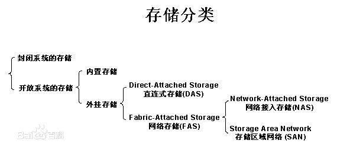
今天的存储解决方案主要为：直连式存储（DAS）、存储区域网络（SAN）、网络接入存储（NAS）。（SAN和NAS的 FS反了。。）

DAS
开放系统的直连式存储（Direct-Attached Storage，简称DAS）已经有近四十年的使用历史，随着用户数据的不断增长，尤其是数百GB以上时，其在备份、恢复、扩展、灾备等方面的问题变得日益困扰系统管理员。
1）直连式存储 依赖服务器主机操作系统进行数据的IO读写和存储维护管理，数据备份和恢复要求占用服务器主机资源（包括CPU、系统IO等），数据流需要回流主机再到服务器连接着的磁带机（库），数据备份通常占用服务器主机资源20-30%，因此许多企业用户的日常数据备份常常在深夜或业务系统不繁忙时进行，以免影响正常业务系统的运行。直连式存储的数据量越大，备份和恢复的时间就越长，对服务器硬件的依赖性和影响就越大。
2）直连式存储与服务器主机之间的连接通道通常采用SCSI连接，带宽为10MB/s、20MB/s、40MB/s、80MB/s等，随着服务器CPU的处理能力越来越强，存储硬盘空间越来越大，阵列的硬盘数量越来越多，SCSI通道将会成为IO瓶颈；服务器主机SCSI ID资源有限，能够建立的SCSI通道连接有限。
3）无论直连式存储还是服务器主机的扩展，从一台服务器扩展为多台服务器组成的群集(Cluster)，或存储阵列容量的扩展，都会造成业务系统的停机，从而给企业带来经济损失，对于银行、电信、传媒等行业7×24小时服务的关键业务系统，这是不可接受的。并且直连式存储或服务器主机的升级扩展，只能由原设备厂商提供，往往受原设备厂商限制。
SAN
存储区域网络（Storage Area Network，简称SAN）采用光纤通道（Fibre Channel）技术，通过光纤通道交换机连接存储阵列和服务器主机，建立专用于数据存储的区域网络。SAN经过十多年历史的发展，已经相当成熟，成为业界的事实标准（但各个厂商的光纤交换技术不完全相同，其服务器和SAN存储有兼容性的要求）。SAN存储采用的带宽从100MB/s、200MB/s，发展到目前的1Gbps、2Gbps。
NAS
网络接入存储（Network-Attached Storage，简称NAS）采用网络（TCP/IP、ATM、FDDI）技术，通过网络交换机连接存储系统和服务器主机，建立专用于数据存储的存储私网。随着IP网络技术的发展，网络接入存储（NAS）技术发生质的飞跃。早期80年代末到90年代初的10Mbps带宽，网络接入存储作为文件服务器存储，性能受带宽影响；后来快速以太网（100Mbps）、VLAN虚网、Trunk(Ethernet Channel) 以太网通道的出现，网络接入存储的读写性能得到改善；1998年千兆以太网（1000Mbps）的出现和投入商用，为网络接入存储（NAS）带来质的变化和市场广泛认可。
由于网络接入存储采用TCP/IP网络进行数据交换，TCP/IP是IT业界的标准协议，不同厂商的产品（服务器、交换机、NAS存储）只要满足协议标准就能够实现互连互通，无兼容性的要求；并且2002年万兆以太网（10000Mbps）的出现和投入商用，存储网络带宽将大大提高NAS存储的性能。NAS需求旺盛已经成为事实。首先NAS几乎继承了磁盘列阵的所有优点，可以将设备通过标准的网络拓扑结构连接，摆脱了服务器和异构化构架的桎梏。
其次，在企业数据量飞速膨胀中，SAN、大型磁带库、磁盘柜等产品虽然都是很好的存储解决方案，但他们那高贵的身份和复杂的操作是资金和技术实力有限的中小企业无论如何也不能接受的。NAS正是满足这种需求的产品，在解决足够的存储和扩展空间的同时，还提供极高的性价比。因此，无论是从适用性还是TCO的角度来说，NAS自然成为多数企业，尤其是大中小企业的最佳选择。
NAS与SAN的分析与比较
使用存储网络的好处：
统一性：形散神不散，在逻辑上是完全一体的。
实现数据集中管理，因为它们才是企业真正的命脉。
容易扩充，即收缩性很强。
具有容错功能，整个网络无单点故障。
专家们针对这一办法又采取了两种不同的实现手段，即NAS（Network Attached Storage）网络接入存储和SAN(Storage Area Networks)存储区域网络。
NAS：用户通过TCP/IP协议访问数据，采用业界标准文件共享协议如：NFS、HTTP、CIFS实现共享。
SAN：通过专用光纤通道交换机访问数据，采用SCSI、FC-AL接口。
NAS和SAN最本质的不同就是文件管理系统在哪里
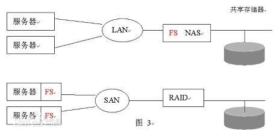
SAN结构中，文件管理系统（FS）还是分别在每一个应用服务器上；而NAS则是每个应用服务器通过网络共享协议（如：NFS、CIFS）使用同一个文件管理系统。
换句话说：NAS和SAN存储系统的区别是NAS有自己的文件系统管理。
NAS是将目光集中在应用、用户和文件以及它们共享的数据上。
SAN是将目光集中在磁盘、磁带以及联接它们的可靠的基础结构。
将来从桌面系统到数据集中管理到存储设备的全面解决方案将是NAS加SAN
为什么写NAS就不得不提到SAN呢?原因之一是它们的名字有69关系，容易混淆;之二是NAS和SAN既竞争又合作，很多高端NAS的后端存储就是SAN。NAS和SAN的整合也是存储设备的发展趋势，比如EMC的新产品VNX系列。右图展示了一台NAS的逻辑结构：双虚线框表示一台NAS。它通过Fibre Channel从后端SAN获得存储空间，创建文件系统后，再通过以太网共享给服务器。SAN提供的存储单位是LUN，属于block级别的。经过NAS创建成文件系统后，就变成文件级别的了。
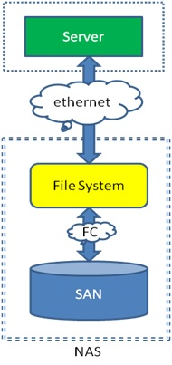
如果上边的逻辑图还不够清楚，可以看看下面的物理连接。NAS通过FC Switch连到SAN上，应用服务器再通过Ethernet Switch连到NAS上。同时SAN也直接提供block级别的存储给应用服务器。
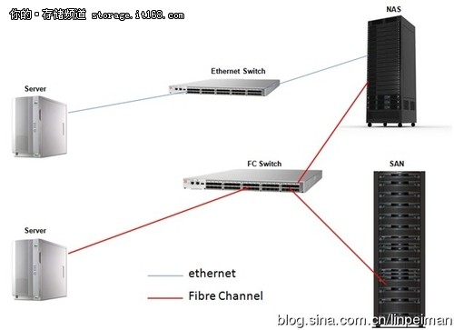
关于NAS和SAN的区别，可以列出很多来。比如带宽大小，距离长短，共享优劣等等。几乎所有区别都是由两个因素衍生出来的。一个是FC与Ethernet，另一个是block与file system。简而言之，如果用户需要通过FC访问block，就用SAN;如果需要通过Ethernet访问file system，就用NAS。
1.4 NAS实现类型对比：统一式、网关式和横向扩展式（Scale-out）
NAS主要有三种类型的实现：统一式、网关式和横向扩展式（Scale-out）。统一NAS使用统一的存储平台将基于NAS和基于SAN的数据访问合并，提供了可以同时管理二种环境的统一管理界面。网关NAS使用外部存储来存取数据，网关NAS和存储的管理操作是分开的。横向扩展式（Scale-out）NAS可组合多个节点，形成一个集群NAS系统。本文将对比三种不同NAS实现类型。
统一NAS
统一NAS提供文件服务，同时负责存储文件数据，并提供块数据访问。它支持用于文件访问的CIFS（Common Internet File System，通用Internet文件系统）和NFS（Network File System，网络文件系统）协议，以及用于块级访问的SCSI（Small Computer System Interface，小型计算机系统接口）和FC（Fibre Channel ）协议。因为基于NAS和基于SAN的访问合并到同一个存储平台，统一NAS降低了企业的基础设施成本和管理成本。
统一NAS的一个系统中包括了一个或多个NAS头及存储。NAS头与存储控制器连接，提供到存储的访问。存储控制器提供了与iSCSI和FC主机的连接。存储可使用不同的磁盘类型（例如SAS、ATA、FC和闪存盘），以满足不同的负载需求。下图显示的是一个统一NAS连接的例子。
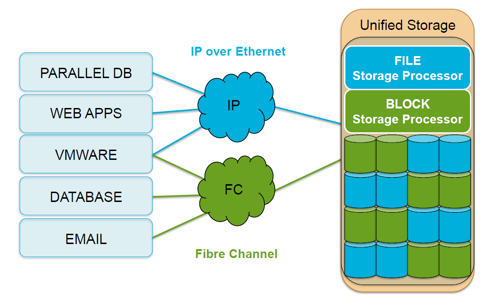
网关式NAS
网关式NAS设备包含一个或多个NAS头，使用外部存储或者独立管理的存储。与统一NAS相似，存储是与其他使用块级I/O的应用共享的。这种解决方案的管理功能比统一存储复杂，因为NAS头和存储器的管理任务是分开的。网关式解决方案可以利用FC基础设施，例如：交换机等，访问SAN存储阵列或直连式存储阵列。
网关式NAS的扩展性比统一NAS好，因为NAS头和存储阵列可以独立地根据需求进行扩展升级。例如：可以通过增加NAS头的方式提升NAS设备的性能。当存储容量达到上限时，网关NAS设备可以独立于NAS头对SAN进行扩展，增加存储容量。网关式NAS通过在SAN环境中进行存储共享，提高了存储资源的利用率。下图是一个网关式NAS连接的例子。
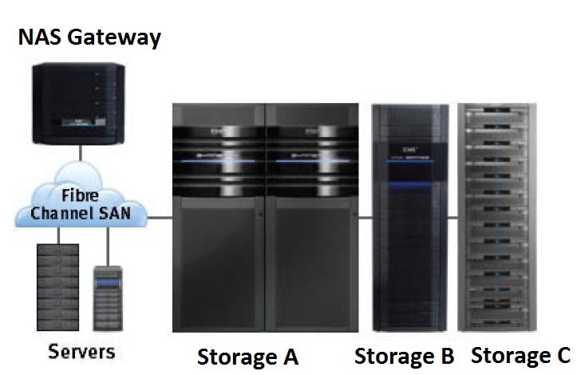
横向扩展式（Scale-out）NAS
统一NAS和网关NAS实现都提供了一定的扩展性能，可以在数据增长和性能需求提高时对资源进行扩展。对NAS设备进行扩展主要涉及增加CPU、内存和存储容量。扩展性受制于NAS设备对后续增加NAS头和存储容量的支持能力。
横向扩展式（Scale-out）NAS可组合多个节点，形成一个集群NAS系统。只需要向集群NAS架构中添加节点即可实现资源的扩展。整个集群可看作是一个NAS设备，资源是集中管理的。在需要扩大容量或提高性能的时候，可向集群中添加节点，这不会造成停机下线的情况。横向扩展NAS可以集合许多性能和可用性中等的节点，形成集群系统拥有更好的总体性能和可用性。它还有易使用、成本低以及理论上可无限扩展的优势。
横向扩展式（Scale-out）NAS在集群中的所有节点上创建了一个单一文件系统。节点的所有信息都可以彼此共享，因此连接到任何节点的客户端都可以访问整个文件系统。集群NAS将数据在所有节点间分条，同时使用镜像或效验方式进行数据保护。数据从客户端发送到集群时，数据被分割，并行分配给不同节点。当客户端发送文件读取请求时，集群NAS从多个节点获取相应的块，将他们组合成文件，然后将文件发给客户端。随着节点的增加，文件系统实现动态扩展，数据在节点之间均衡分布。每个增加的节点都增加了整个集群的存储、内存、CPU和网络能力。因此，整个集群的性能都得到提升。
横向扩展式（Scale-out）NAS适合解决企业和客户当前面临的大数据问题。它统一管理和存储高速增长的数据，同时又十分灵活，能满足各种性能需求。下图显示的是一个横向扩展式（Scale-out）NAS连接的例子。
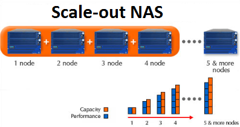
--------------------------------------------------------------------------------------------------------------------------------------------------------------
2. 主要协议和技术
2.1 SCSI访问控制原理介绍
SCSI-2 Reserve(预留)/Release(释放)/Reset（重置）
SCSI-2协议中客户端访问lun过程如下：
1、客户端向lun发起预留操作
2、预留操作成功后，客户端获得lun操作权限；预留失败，提示预留冲突，会继续尝试，直到预留成功。
3、客户端操作完毕后，执行释放操作，其他客户端可以预留。
SCSI-2访问控制主要缺点有：
1、预留操作基于路径。预留和释放必须由相同的客户端完成，一台主机不能释放另外一台主机的预留，同一主机HBA卡不能取消相同主机另外一块HBA的预留。
2、预留无法长久保留。主机重启将会丢失预留信息。
3、如果lun已经被预留，其他主机无法再预留。如果其他主机要想获得lun操作权限，必须对lun进行重置，重置操作可能会导致数据丢失。重置后释放掉lun现有的预留，重置操作由lun主动发起，原来预留主机并不知晓。
SCSI-3 Persistent Reserve (PR)/ PREEMPT（抢占）
SCSI-3协议引入PGR（persistent group reservation）功能。在访问lun之前，客户端首先向lun注册（registration）一个预留密钥(reservation key)，注册成功后客户端可以尝试进行永久预留（reserve），永久预留成功后就可以获得lun操作权限。预留密钥是一串16进制的ASCII码，最长8个字节。永久预留一共6种类型，由1、3、5、6、7、8数字表示。包括两种操作类型和三种客户类型，操作类型包括写排它和所有访问排他，客户类型包括所有客户端、已注册客户端和所属客户端。数字与永久预留类型对应关系如下：
1-> write exclusive
3-> exclusive access
5-> write exclusive - registrants only
6-> exclusive access - registrants only
7-> write exclusive - all registrants
8-> exclusive access - all registrants.
不同注册类型对应不同访问权限。与SCSI-2不同，SCSI-3释放操作根据预留密钥。不同客户端可以使用相同密钥或是不同密钥进行预留，具体可以结合永久预留类型决定。客户端可以通过抢占来获取已被永久预留的lun访问权限。SCSI-3抢占和SCSI-2重置不一样，抢占不会造成数据丢失。
SCSI-3关于PGR相关操作命令分为两大类：分别是PRIN和PROUT。PRIN主要用于查询，PROUT用于修改。SCSI命令执行过程中，需要明确该命令是哪种类型。
常见使用场景
1、 集群I/O Fencing
为了防止集群故障发生“脑裂”现象，2-节点集群可以通过SCSI-2 Reseve/Release触发I/O fencing来保证整个集群正常运行，是SCSI-2不适用于多-节点集群，多-节点集群可以使用SCSI-3 PGR。主流厂商集群套件都已经支持SCSI-3 PGR，比如：VCS、HACAMP、RHCS等。
2、 集群文件系统
集群文件系统需要保证多节点同时访问存储时的数据一致性，SCSI-2/SCSI-3都可以满足，当一个节点尝试访问一个已经被预留的存储就会产生访问权限冲突。SCSI-3 PGR相比SCSI-2 Reserve/Release更能够减少访问权限冲突。
小结：
SCSI-2具体基本访问控制能力，但是无法满足Active/Active多路径环境和集群多节点访问存储的需求。SCSI-3通过引入客户端注册和操作权限分类概念，强化并行访问权限控制，弥补SCSI-2的不足。
2.2 FCIP
IP光纤通道（FCIP，也被称为光纤通道隧道连接或存储隧道连接）是基于IP的存储网络协议。作为IP网络上存储数据传输的两个主要方法之一，FCIP通过提高存储数据传输的功能和性能，成为实现SAN市场快速开发的关键技术。Fibre Channel over IP protocol（FCIP）是一种隧道协议。将多个物理独立分步的光纤SAN环境，通过IP LAN/MAN/WAN连接起
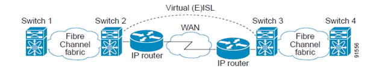
FCIP使用IP层作为网络，TCP作为传输层，TCP头部的DF位设置为1.
FCIP基本概念：
FCIP功能支持可以通过Cisco IPS（ip storage）模块或者MPS (multiprotocol service) 模块获得，FCIP基本概念如下。
FCIP和VE_Port
下图结合Fibre Channel ISL和Cisco EISL描述FCIP内部模型。
FCIP virtual E(VE) Ports在逻辑上于标准Fbire Channel E Ports一样，只是使用FCIP协议封装而不是Fibre Channel。
FCIP协议要求链路两端都是VE Ports。
虚拟ISL链路通过FCIP链路建立，并在之上传输Fibre Channel数据帧。虚拟ISL链路和Fibre Channel ISL一样，两端是E Port或者TE Port。
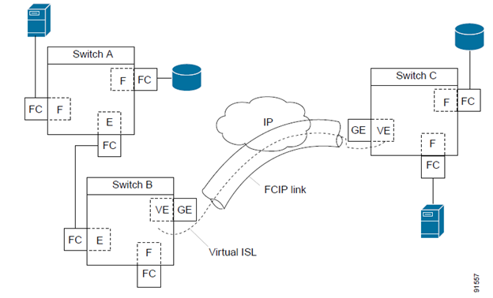
FCIP链路
FCIP链路由两个FCIP终端之间的一个或者多个TCP连接组成。每个链路携带FCIP协议封装过的光纤帧。当FCIP链路启动，FCIP链路两端的VE端口会创建一个virtual (E)ISL链路，并且初始化E端口协议拉起（E）ISL链路。默认情况下，Cisco MDS 9000系列交换机会为每个FCIP链路创建两个TCP连接。
- 一个连接用于数据帧传输
- 另外一个连接用户Fibre Channel控制帧（所有F类型帧）。专门一个连接用于传输Fibre Channel控制帧是为了保证控制帧低延迟。
在IPS或者MPS模块上使用FCIP功能之前，首先需要配置FCIP interface和FCIP profile。
FCIP链路再两个节点之间建立成功只是，VE Port初始化过程与E Port一样。初始化过程与FCIP或者Fibre Channel无关，而是基于E Port发现过程（ELP，ESC）。在Fibre Channel层，E Port和VE Port是一样的。
FCIP Profile
FCIP profile包含本地IP地址和TCP端口灯参数配置信息。FCIP profile的本地IP地址具体FCIP链路使用哪个Gigabit以太网口。
FCIP Profile与FCIP链路关系图如下：
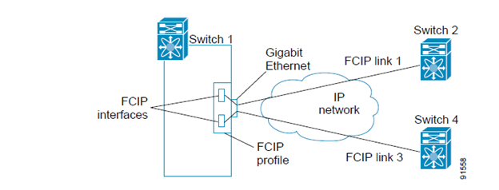
FCIP接口
FCIP接口是指FCIP链路本地以太网接口和VE Port接口。所有FCIP和E Port配置都是正对FCIP接口。
FCIP参数包含以下：
- Gigabit以太网口和TCP连接参数
- 对端信息
- FCIP链路TCP连接数量
- E Port参数（trunking模式和trunk allowed VSAN列表）
2.3 iSCSI, FC和FCoE的比较和适用场景
FC是部署最多的SAN协议了，大家都很熟悉。iSCSI和FCoE都运行在以太网上，因此可以帮助企业节省IT架构的投入成本和复杂度。特别是iSCSI，可以直接沿用企业现有的IT架构，对很多中小型企业这是不可忽视的优势。这三种协议工作在不同的网络层。FCoE起步就是10Gb以太网；而iSCSI可以工作在1Gb或10Gb以太网；FC则有2GB、4Gb或8GB。另外iSCSI支持software initiator，普通台式机也可以接入存储。
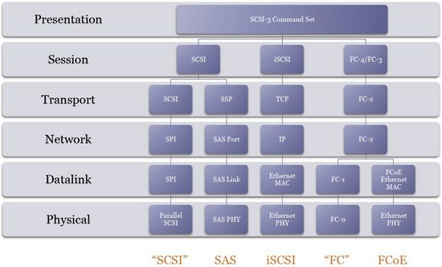
iSCSI
The Internet Small Computer Systems Interface (iSCSI) protocol
iSCSI是将SCSI命令在封装在TCP/IP包里面，并使用一个iSCSI帧头；封装SCSI数据包成为iSCSI需要大量消耗处理器资源。然而，iSCSI的基于TCP/IP的操作也同样有一个巨大优势，易于路由，不必特殊硬件即可实现，这也是FCoE一直应用于数据中心的一个重要原因。
FCIP
Fibre Channel over TCP/IP (FCIP)
FCIP是在IP tunnel的基础上传送FC包，FC里面再封装SCSI命令；为一类简单的隧道协议，它能将两个Fibre Channel网连接起来，形成更大的光纤交换网。用于扩展第2层网络的桥接解决方案，
FCIP的特性在于:首先，FCIP只能在FCIP设备之间建立点到点连接，即FCIP设备一端(IP端)和另外一个FCIP设备的IP端进行连接，FCIP设备的另外一端(FC端)和FC光纤通道交换机进行连接，FCIP设备无法在两个独立存储设备之间提供本地IP连接;其次，由于FCIP是一种不透明的传输协议，即一个SAN向另一个SAN发送的信息在FC层没有错误检测，容易将一个SAN上的错误蔓延到各个SAN;再次是FC和IP网络之间线速的不匹配，或者FCIP引擎的低效实现，都有可能使得FCIP设备成为一个瓶颈。如果FCIP通道崩溃，两个远程FC交换机之间的连接也不会自动恢复，这对商业应用来说显然是难以接受的。
基于FCIP的设备现在有Brocade多协议路由器等。
FCIP （ Fibre Channel over IP ，基于 IP 的光纤信道协议） 描述了一种机制，能够通过 IP 网络将各个孤立的光纤信道存储区域网络连接起来， 从而形成一个统一的存储区域网络 。 FCIP 为一类简单的隧道协议， 它能将两个 Fibre Channel 网连接起来，形成更大的光纤交换网。 FCIP 类似于用于扩展第 2 层网络的桥接解决方案， 它本身不具备 iFCP 特有的故障隔离功能。 数据格式如下：
iFCP
The Internet Fibre Channel Protocol (iFCP) supports Fibre Channel Layer 4 FCP over TCP/IP. It is a gateway-to-gateway protocol where TCP/IP switching and routing components complement and enhance, or replace, the Fibre Channel fabric.
iFCP的工作原理是：将Fibre Channel数据以IP包形式封装，并将IP地址映射到分离Fibre Channel设备。
由于在IP网中每类Fibre Channel设备都有其独特标识，因而能够与位于IP网其它节点的设备单独进行存储数据收发。(因为FChdr跟IPhdr有映射)
在同一本地存储局域网（san）或者通过传输控制协议/互联网络协议（TCP/IP协议）在因特网上，Internet光纤信道协议（iFCP）将可以实现光纤信道设备间的存储数据流畅收发。通过运用内建的TCP拥塞控制、错误检测以及故障修复机制，iFCP同样能在Fibre Channel网中进行完整的错误控制。Internet光纤信道协议（iFCP）兼容目前的小型计算机系统接口（SCSI）和网络运行光纤信道（Fibre Channel）通信标准。它不但可以和当前的基于IP的光纤信道标准FCIP（Fibre Channel over IP）草案互联，也可以取代这个标准。 Internet光纤信道协议（iFCP）具有一些基于IP的光纤信道标准（FCIP）不具备的特点。比如说，FCIP为一类简单的隧道协议，它能将两个Fibre Channel网连接起来，形成更大的光纤交换网。FCIP类似于用于扩展第2层网络的桥接解决方案，它本身不具备iFCP特有的故障隔离功能。由于iFCP能够取代和兼容FCIP，因此iFCP具有更强的灵活性。iFCP的典型应用是用于SAN对SAN互连。这时Fibre Channel网连接到iFCP网关，通信依次透过城域网（MAN）或WAN进行。
iFCP（Internet Fibre Channel, Internet 光纤信道协议）是一种网关到网关的协议，为 TCP/IP 网络上的光纤设备提供光纤信道通信服务。 iFCP 的工作原理是：将 Fibre Channel 数据以 IP 包形式封装，并将 IP 地址映射到分离 Fibre Channel 设备。 由于在 IP 网中每类 Fibre Channel 设备都有其独特标识，因而能够与位于 IP 网其它节点的设备单独进行存储数据收发。数据格式如下：
FCoE
Fibre Channel over Ethernet (FCoE) is an encapsulation of Fibre Channel frames over Ethernet networks.
FCoE,适合10Gb以太网。融合存储网和以太网的一种协议。FCoE被定位在企业级应用，而iSCSI则定位在小型商务应用级别。
因为FCoE机制必须支持存储数据的读写，所以所有网络存储路径下的终端设备和以太网交换机必须支持双向IEEE 802.3x流控制。尽管这样的效果可能不如Buffer-to-buffer Credits机制那么理想，但是IEEE 802.3x暂停帧可以提供对应的功能性，来调节存储流量并防止阻塞和缓冲区溢出引起的丢帧。
FCoE也必须解决以太网和光纤通道各自所传输的帧之间的差异。通常一个以太网的帧最大为1518字节。而一个典型的光纤通道帧最大为大约2112字节。因此在以太网上打包光纤帧时需要进行分段发送，然后在接收方进行重组。这会导致更多的处理开销，阻碍FCoE端到端传输的流畅性。
因此需要一个更大的以太网帧来平衡光纤通道和以太网帧大小上的差异。有一个称为"巨型帧"的实质标准，尽管不是正式的IEEE标准，但它允许以太网帧在长度上达到9k字节。在使用"巨型帧"时需要注意，所有以太网交换机和终端设备必须支持一个公共的"巨型帧"格式。
最大的巨型帧（9K字节）可以实现在一个以太网帧下封装四个光纤通道帧。但是这会使光纤通道连接层恢复以及应用802.3x暂停指令的缓冲流量控制变得更加复杂。如图2所示，FCoE向一个巨型以太网帧内封装一个完整的光纤帧（不使用循环冗余校验）。因为以太网已经提供了帧检验序列（FCS）来检验传输数据的完整性，所以不需要光纤帧的循环冗余校验（CRC）。这进一步降低了传输层所需的处理开销，同时提高通道的性能。由于光纤帧可能包括拓展的、可选择的信头或虚拟光纤标记信息，所以以太网"巨型帧"的大小就不合适，并且会随着封装光纤帧的需要而发生变化。
应用环境:
- iSCSI：SCSI与TCP/IP结合，把SCSI命令和数据用IP包封装起来，事实上ISCSI作为传输层的东西。
- FCIP：是一个隧道协议，讲FC的数据包封装成IP数据包，成为一个IP隧道，注意的是IP数据包里面的数据是FC的数据包,这个是协议封装协议的思想。
- iFCP：是一个转换协议，讲FC协议和TCP/IP协议进行转换，是在网关上执行的。也就是说将FC的数据包转化为IP数据包。注意的是IP数据包里面的数据就是数据。
- 一般iSCSI和FCOE是用于SAN也就是本地连接部分居多，而FCIP和IFCP是多用于两个SAN之间的连接使用的。
2.4 网络虚拟化
• 网络虚拟化（一）：简介
• 网络虚拟化（二）：虚拟交换机
• 网络虚拟化（三）：VXLAN虚拟可扩展局域网（上）
• 网络虚拟化（四）：VXLAN虚拟可扩展局域网（下）
• 网络虚拟化（五）：通过划Zone来提高虚拟网络的安全性
2.4.1 简介
目前，软件定义的数据中心是一大热门技术，VMware作为全球最大的虚拟化厂商实现了通过软件可以定义应用及其所需的所有资源，包括服务器、存储、网络和安全功能都会实现虚拟化，然后组合所有元素以创建一个软件定义的数据中心。通过虚拟化可以减少服务器部署的时间和成本，可以实现灵活性和资源利用率的最大化，可以在调配虚拟机时对环境进行自定义，在软件定义的数据中心里虚拟机可以跨越物理子网边界。
传统的网络在第2层利用VLAN来实现广播隔离，在以太网数据帧中使用12位的VLAN ID将第二层网络划分成多个广播域，VLAN数量需少于4094个。但随着虚拟化的普及，4094个的数值上限面临着巨大压力。此外，由于生成树协议（STP）的限制，极大的限制了可以使用的VLAN 数量。基于VXLAN的网络虚拟化解决了传统物理网络面临的诸多难题。
网络虚拟化可将网络抽象化为一个广义的网络容量池。因此便可以将统一网络容量池以最佳的方式分割成多个逻辑网络。您可以创建跨越物理边界的逻辑网络，从而实现跨集群和单位的计算资源优化。不同于传统体系架构，逻辑网络无需重新配置底层物理硬件即可实现扩展。VMware网络虚拟化是通过虚拟可扩展局域网（VXLAN）技术，创建叠加在物理网络基础架构之上的逻辑网络。
VMware网络虚拟化解决方案满足了数据中心的以下几大需求：
• 提高计算利用率
• 实现集群的扩展
• 跨数据中心内多个机架利用容量
• 解决IP寻址难题
• 避免大型环境中VLAN数量剧增问题
• 实现大规模多租户
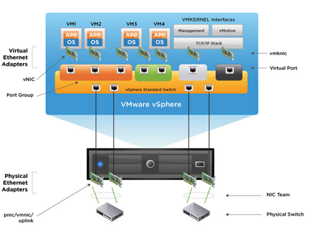
通过采用网络虚拟化，可以有效的解决这些问题并实现业务优势：
• 加快网络和服务的调配速度，实现业务敏捷性。
• 将逻辑网络与物理网络分离，提供充分的灵活性。
• 大规模隔离网络流量并将其分段。
• 自动执行可重复的网络和服务调配工作流。

2.4.2 虚拟交换机
虚拟交换机在许多方面都与物理以太网交换机相似。每个虚拟交换机都是互相隔离的，拥有自己的转发表，因此交换机查找的每个目的地只能与发出帧的同一虚拟交换机上的端口匹配。它可以在数据链路层转发数据帧，然后通过以太网适配器出口连接到外部网络。虚拟交换机能够将多个以太网适配器绑定在一起，类似于传统服务器上的网卡绑定，从而为使用虚拟交换机提供更高的可用性和带宽。它还支持端口级别的VLAN分段，因此可以将每个端口配置为访问端口或中继端口，从而提供对单个或多个VLAN的访问。
但是与物理交换机不同，虚拟交换机不需要生成树协议，因为它强制使用单层网络连接拓扑。多个虚拟交换机无法进行互连，在同一台主机内，网络通信流量无法在虚拟交换机之间直连流动。虚拟交换机通过一个交换机提供用户需要的所有端口。虚拟交换机无需进行串联，因为它们不共享物理以太网适配器。
虚拟交换机可提供二种与主机和虚拟机相连接的类型：
• 将虚拟机连接到物理网络。
• 将VMkernel服务连接到物理网络。VMkernel服务包括访问IP存储（如：NFS或iSCSI）、执行vMotion迁移以及访问管理网络。
设计网络连接环境时，您可以通过VMware vSphere将所有网络都置于一个虚拟交换机中。或者，您也可以选择多个虚拟交换机，每个虚拟交换机具有一个单独的网络。具体作何选择在某种程度上取决于物理网络的布局。例如：您可能没有足够的网络适配器，无法为每个网络创建一个单独的虚拟交换机。因此，您可能会将这些网络适配器绑定在一个虚拟交换机上，然后使用VLAN来隔离这些网络。
虚拟网络支持二种类型的虚拟交换机：
• 虚拟网络标准交换机：主机级别的虚拟交换机配置。
标准交换机可以将多个虚拟机连接起来，并使它们彼此可以进行通信。每个标准交换机最多有4088个虚拟交换机端口，而每台主机最多有4096个虚拟交换机端口。下图显示了几个标准交换机的不同用途。这些交换机从左到右依次为：
1. 配置绑定网卡的标准交换机。绑定的网卡可自动分发数据包以及执行故障切换。
2. 仅限内部使用的标准交换机，允许单个ESXi主机内的虚拟机直接与其他连接到同一标准交换机的虚拟机进行通信。VM1和VM2可使用此交换机互相通信。
3. 配置一个出站适配器的标准交换机。该交换机提供VM3使用。
4. VMkernel用来实现远程管理功能的标准交换机。
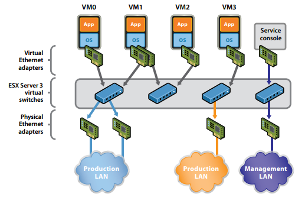
• 虚拟网络分布式交换机：虚拟网络分布式交换机是一款数据中心级交换机。标准交换机基于主机工作，交换机配置保存在ESXi主机上面。而数据中心交换机能够独立于物理结构实现统一虚拟化管理。虚拟网络分布式交换机配置通过vCenterServer管理，并且所有虚拟网络配置的详细信息都存储在vCenter Server数据库中。VXLAN网络可在一个或多个vSphereDistributed Switch上进行配置。
另外，vNetwork分布式交换机具有以下特征：
1. 独立于物理结构的统一网络虚拟化管理。
2. 针对整个数据中心管理一台交换机与针对每台主机管理若干标准虚拟交换机。
3. 支持VMware vSpherevMotion，因此统计数据和策略可随虚拟机一同转移。
4. 独立的管理界面。
5. 高级流量管理功能。
6. 监控和故障排除功能，如NetFlow和端口镜像。
7. 主机级别的数据包捕获工具（tcpdump）。
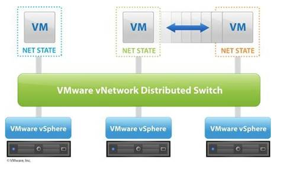
2.4.3 VXLAN虚拟可扩展局域网（上）
在2011年的VMworld大会上，VMware提出了VXLAN（virtual Extensible LAN虚拟可扩展局域网）技术。VXLAN技术是VMware、CISCO、Arista、Broadcom、Citrix和Redhat等厂商共同开发用于虚拟网络的技术，与之抗衡的有Microsoft联合Intel、HP和Dell开发的NVGRE标准（Network Virtualization using Generic Routing Encapsulation）。本文将重点介绍VXLAN的优势、VMware的VXLAN组件和应用案例分析。
VXLAN逻辑网络有以下几项优于传统物理网络的明显优势：
1、突破了传统VLAN的数量限制。
物理网络使用VLAN来限制和隔离第2层广播域，VLAN的数量上限为4094个。随着主机虚拟化技术的兴起，4094个VLAN数已经远不能满足云数据中心的需求。不同于VLAN的4094限制，VXLAN网络可以支持多达1600万个VLAN标识符。
2、突破了传统的物理界限，满足多租户环境和规模扩展的需求。
VXLAN网络是一个创建叠加在物理网络基础架构之上的逻辑网络，实现了在底层硬件上的独立配置。VXLAN网络大大减少了数据中心网络管理和配置所花费的时间，它提供的多层次网络拓扑结构和企业级安全服务，可将部署、调配时间从几周减少到数小时。同时，在VXLAN网络部署的虚拟机可以实现跨物理机迁移，例如：北京数据中心的虚拟机可以和上海的数据中心的虚拟机在二层网络上进行通信，打破了传统的二层网络的界限。
3、解决STP（生成树协议）高负荷
VXLAN 中使用了新技术替代STP（生成树协议）, 因此解决了汇聚层交换机由于STP高负荷导致的压力过大问题。
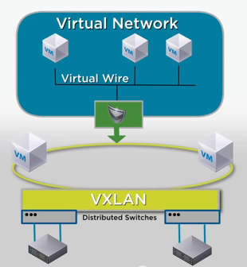
在vSphere 5.5版本中，VXLAN实现组件包括：
• vShield Manager
vShield Manager是vShield的集中式网络管理组件，可作为虚拟设备安装在vCenter Server 环境中的任意ESX主机上。vShieldManager可在与安装vShield代理不同的ESX主机上运行。使用 vShield Manager用户界面或vSphere Client插件，管理员可以安装、配置和维护vShield组件。vShield Manager可以定义并管理VXLAN网络，包括：定义VXLAN网络的延展范围、配置vSphere承载VXLAN网络的VDS和配置VTEP等。
• vSphere分布式交换机
在VXLAN网络中vSphere分布式交换机用于连接主机和互连。
• vSphere主机
在VXLAN网络中每台vSphere主机上需要配置虚拟安全加密链路端点（VETP）模块，每个主机VEP会分配到一个唯一的IP地址，在vmknic虚拟适配器上进行配置，用于建立主机之间的通信安全加密链路并承载VXLAN流量。VTEP由以下三个模块组成：
1). vmkernel模块
此模块负责VXLAN数据路径处理，其中包括转发表的维护以及数据包的封装和拆封。
2)、vmknic虚拟适配器
此模块用于承载VXLAN控制流量，其中包括对多播接入、DHCP和ARP请求的响应。
3)、VXLAN端口组
此端口组包括物理网卡、VLAN信息、绑定策略等。端口组参数规定了VXLAN流量如何通过物理网卡进出主机VTEP。
创建VXLAN虚拟网络案例演示
此方案的情形如下：在数据中心的两个群集上有多个 ESX 主机。工程部门和财务部门都在Cluster1 上。市场部门在Cluster2 上。两个群集都由单个vCenter Server 5.5进行 管理。
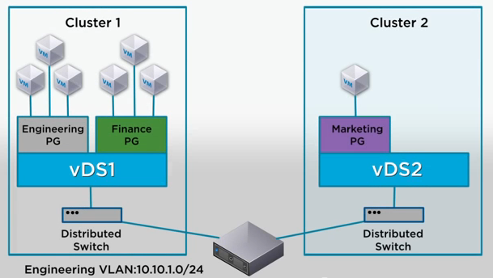
Cluster1 上的计算空间不足，而 Cluster2 未充分利用。老板要求IT管理员将工程部门的虚拟机扩展到 Cluster2上，实现工程部门的虚拟机位于两个群集中，并且能够彼此通信。如果 IT管理员使用传统方法解决此问题，他需要以特殊方式连接单独的 VLAN 以便使两个群集处于同一二层域中。这可能需要购买新的物理设备以分离流量，并可能导致诸如 VLAN 散乱、网络循环以及系统和管理开销等问题。
通过 VXLAN技术，IT管理员可以通过跨dvSwitch1 和 dvSwitch2 构建VXLAN 虚拟网络，在不添加物理设备的情况下达到要求。
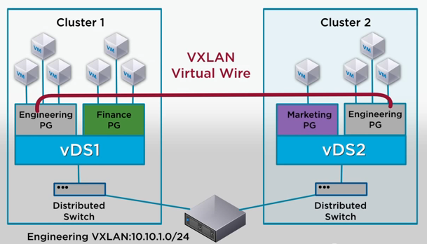
2.4.4 VXLAN虚拟可扩展局域网（下）
VXLAN传输数据包
VXLAN虚拟可扩展局域网是一种overlay的网络技术，使用MAC in UDP的方法进行封装，在封装包中间添加了一层共50字节的VXLAN Header，然后以IP数据包的形式通过3层网络进行传输。位于VXLAN安全加密链路任何一端的虚拟机不知道这个封装包。同时，物理网络中的设备也不知道虚拟机的源或目的MAC或IP地址。VXLAN的封装结构如下图所示：
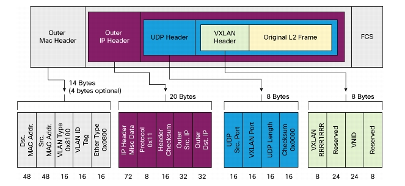
1. VXLAN Header：
共计8个字节，目前被使用的是Flags中的一个标识位和24bit的VXLAN Network Identifier，其余的部分没有定义，但是在使用的时候必须设置为0×0000。
2. 外层的UDP报头：
目的端口使用4789，但是可以根据需要进行修改。同时UDP的校验和必须设置成全0。
3. IP报文头：
目的IP地址可以是单播地址，也可以是多播地址。
单播情况下，目的IP地址是VXLAN Tunnel End Point(VTEP)的IP地址。
在多播情况下引入VXLAN管理层，利用VNI和IP多播组的映射来确定VTEPs。
从封装的结构上来看，VXLAN提供了将二层网络overlay在三层网络上的能力，VXLAN Header中的VNI有24个bit，数量远远大于4096，并且UDP的封装可以穿越三层网络，因此比的VLAN更好的可扩展性。
VXLAN协议网络工作原理
（1）、网络初始化
在VXLAN协议工作前需要进行网络初始化配置。网络初始化就是让虚拟网络中的主机加入到该VXLAN网络所关联的多播组。例如：VM1和VM2连接到VXLAN网络，那么二台VXLAN主机（ESXi1和ESXi2）就需要先加入IP多播组239.119.1.1。VXLAN的网络标识符（VNI）就是网络ID。
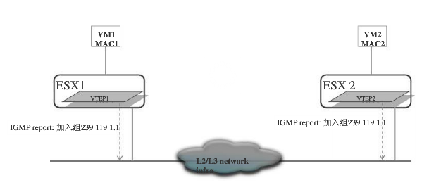
（2）、ARP查询
下图描述了VXLAN协议中二个连接到逻辑2层网络的虚拟机（VM1和VM2）ARP查询流程。
1. VM1以广播形式发送ARP请求；
2. VTEP1封装报文。本例中，VXLAN 100关联在IP多播组239.119.1.1中，VNI为100；
3. VTEP1通过多播组将数据包发送给VTEP2；
4. VTEP2接收到多播包。VTEP2将验证VXLAN网段ID，拆封数据包，然后将通过2层广播包的形式其转发到虚拟机VM2；
5. VM2收到广播包后发送ARP响应。
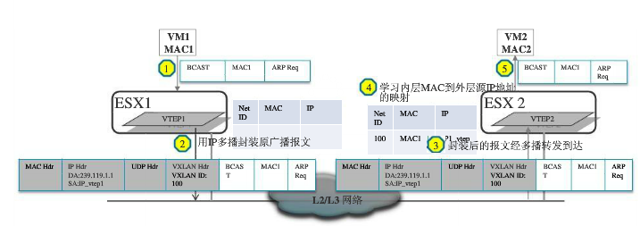
注意：VTEP1只会在VTEP转发表中没有虚拟机MAC与该MAC地址的VTEP IP之间的映射时，才会生成多播包。在广播数据包时，如果MAC转发表中没有与帧目的MAC地址相匹配的条目，2层交换机会执行ARP查询操作。在发现虚拟机MAC地址与VTEP IP地址的映射条目并将其更新到转发表中后，任何与该特定虚拟机通信的请求都将通过点到点安全加密链路传输。
（3）、ARP应答
ARP应答处理流程类似于ARP请求，不同之处在于VM2将通过单播包进行ARP响应。因为VTEP2已经获得了VM1的MAC地址、IP地址以及VTEP1的信息。VTEP2将建立一个转发条目，以后交换数据包操作会使用该转发条目。
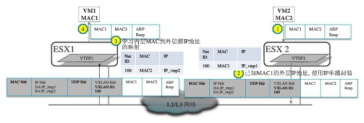
（4）、VXLAN网关
如果需要VXLAN网络和非VXLAN网络连接，必须使用VXLAN网关才能把VXLAN网络和外部网络进行连接。下图描述了VXLAN网关的工作原理：
1. VM2通过网关MAC地址向网关发送数据包；
2. VTEP2封装数据包，通过多播（第一次）发送给VTEP1;
3. VTEP1拆封数据包，并发送到网关；
4. 网关将IP数据包路由到Internet。
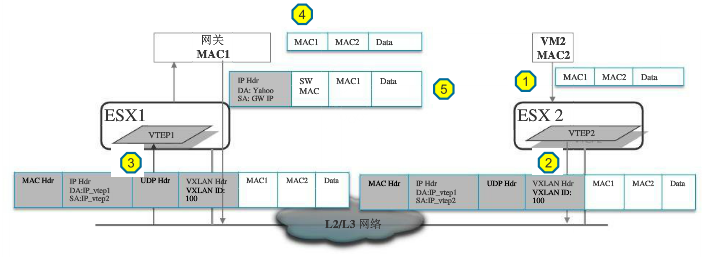
案例（一）
当二台虚拟机在同一逻辑2层网络中时，如果二个虚拟机都在同一台vSphere主机上，那么数据包无需封装。如果二个虚拟机在不同vSphere主机上，一台vSphere主机上的源VTEP将虚拟机数据包封装到一个新UDP标头中，并通过外部IP网络将其发送到另一台vSphere主机上的目标VTEP。
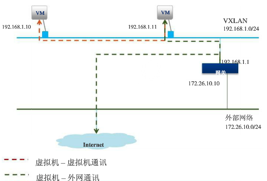
案例（二）
图中显示了二个虚拟网络VXLAN-A和VXLAN-B。二个网络分别属于192.168.1.0/24网段和192.168.2.0/24网段，二个网络通过VXLAN网关进行连接。以下是可能情况：
（1）、当所有虚拟机和VXLAN网关位于同一vSphere主机上时。虚拟机将流量导向各自逻辑网络子网的网关IP地址，VXLAN会根据防火墙规则在二个不同接口之间进行路由。
（2）、当所有虚拟机不在同一台vSphere主机上，而VXLAN网关部署在其中一台vSphere主机时。虚拟机的流量将被封装到数据包，然后进过物理网络传送到VXLAN网关，之后将由网关将数据包路由到正确的目标。
（3）、当所有虚拟机和VXLAN网关不在同一台vSphere时。数据包传输将类似于情况2。
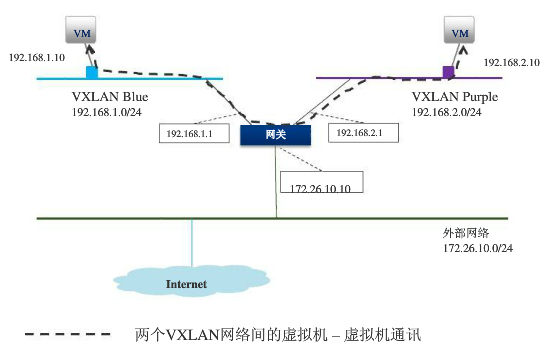
2.4.5 通过划Zone来提高虚拟网络的安全性
虚拟环境面临的最常见威胁是不安全的接口和网络、过高的权限、错误配置或不当管理，以及未打补丁的组件。由于虚拟机是直接安装在服务器硬件上的，因此许多常规安全漏洞并不存在太大的安全威胁。在vSphere环境中，必须保护好以下基本组件：
• 物理网络和虚拟网络
• 基于IP的存储和光纤通道
• 物理和虚拟应用服务器以及应用客户端
• 托管虚拟机的所有ESXi系统
• 数据中心内的所有虚拟机
• 虚拟机上运行的应用程序
划Zone是保护物理网络和虚拟网络的一种有效方法。Zone定义了一个网段，在网段中的数据流入和流出都将受到严格的控制。在虚拟网络中，常见的划Zone方式有以下三种：
1）、通过物理设备实现分离
在这种配置中，每个区域都采用单独的ESXi物理主机或集群，区域隔离是通过服务器的物理隔离和物理网络安全设定来实现的。这种配置方法较为简单，复杂度较低，不需要对物理环境进行调整，是一种将虚拟技术引入网络的好办法。但是，这种配置方法会制约虚拟化提供的优势，资源整合率和利用率较低，使用成本较高。
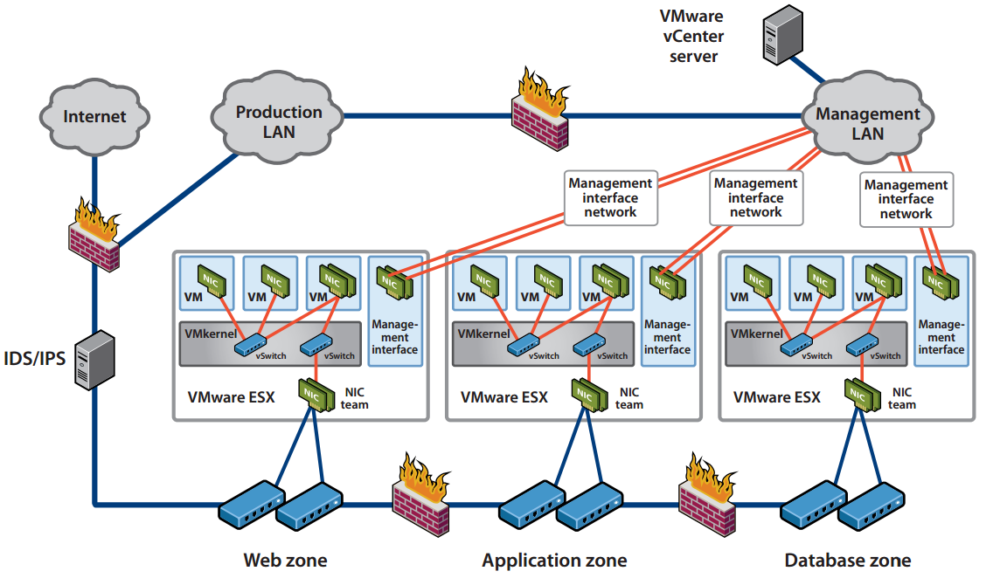
2）、通过虚拟技术实现分离
在这种配置中，通过使用虚拟交换机可以将虚拟服务器连接到相应的区域，在同一台ESXi主机上设置不同信任级别的虚拟服务器，这种区域是在虚拟化层中实施的。虽然这种方法可以实现在物理机和虚拟领域实施不同的安全设定，但是仍然需要通过物理硬件来确保区域之间的网络安全。虽然在每个区域中都显示了不同的虚拟交换机，但是用户仍然可以使用VLAN以及单个虚拟交换机上不同的端口组实现相同的目的。
这种方法较好的整合了物理资源，能较好地利用虚拟化优势，成本较低。然而，与采用物理设备实现分离相比，这种配置较为复杂，必须明确配置人员，需要定期审核配置。
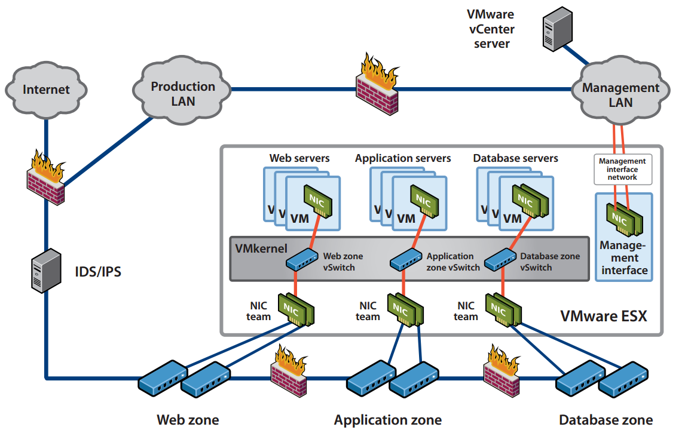
3）、完全合并再分离
这是一种建立在完全虚拟前提下的隔离。用户可以将不同安全级别的虚拟机置于不同物理服务器上，并将网络安全设备引入虚拟基础架构。通过虚拟网络设备实现管理和保护虚拟信任域之间的通行。例如：通过VMware的vShield组件，可以为不同区域建立通信，同时监控通信。
这种配置中，所有的服务器和安全设备都进行了虚拟化，用户可以隔离虚拟服务器和网络，使用虚拟安全设备管理不同区域之间的通信。这是配置能够充分利用资源，减低成本，通过单个管理工作站管理整个网络，但是配置和管理最为复杂，出错几率较高。
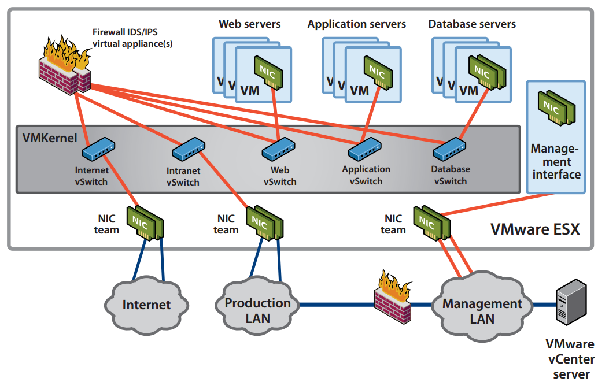
2.5 iSCSI存储系统基础知识
2.5.1 第一部分
背景:
相比直连存储，网络存储解决方案能够更加有效地共享，整合和管理资源。从服务器为中心的存储转向网络存储，依赖于数据传输技术的发展，速度要求与直连存储相当，甚至更高，同时需要克服并行SCSI固有的局限性。所有数据在没有文件系统格式化的情况下，都以块的形式存储于磁盘之上。并行SCSI将数据以块的形式传送至存储，但是，对于网络它的用处相当有限，因为线缆不能超过25米，而且最多只能连接16个设备。光纤通道是目前SAN的主导架构，它在专门的高速网络上分离存储资源。光纤通道协议与互联技术起源于满足高性能传送块数据的需求，同时克服直连存储的连接和距离限制。通常光纤通道设备连接距离可达到10000米，甚至数十万米，并且对于连接在SAN之上的设备没有数量要求。与SAN不同，NAS将数据以文件的形式传输并且可以直接连接至IP网络。部署NAS设备传送数据库块数据，使用基于SCSI的光纤通道协议比Server Message Block(SMB)协议更加高效。
什么是iSCSI：
iSCSI是一种使用TCP/IP协议在现有IP网络上传输SCSI块命令的工业标准，它是一种在现有的IP网络上无需安装单独的光纤网络即可同时传输消息和块数据的突破性技术。iSCSI基于应用非常广泛的TCP/IP协议，将SCSI命令/数据块封装为iSCSI包，再封装至TCP 报文，然后封装到IP 报文中。iSCSI通过TCP面向连接的协议来保护数据块的可靠交付。由于iSCSI基于IP协议栈，因此可以在标准以太网设备上通过路由或交换机来传输。
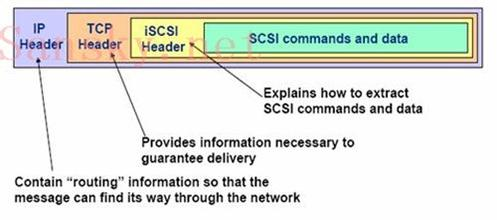
iSCSI架构依然遵循典型的SCSI模式：随着光纤通道的发明initiator和target之间的SCSI线缆已被光线线缆所代替。现在随着iSCSI的出现光纤线缆又被价格低廉的网线和TCP/IP网络所替代。
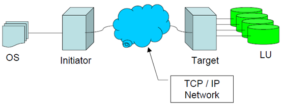
然现有的光纤存储网络具有高吞吐量的优势，与其他厂商之间的互通性仍是一个短板。而基于成熟的TCP/IP协议的iSCSI网络，不仅免于互通性限制而且在安全性等方面具备优势。同时，由于千兆以太网的增量部署，iSCSI的吞吐量也会随之增加，与光线通道匹敌甚至超越光线通道。
iSCSI的优势：
长距离连接：SAN网络集中管理存储资源，能够覆盖一个市区范围。对于分布在海外的组织则面临一系列未连接的“SAN孤岛”，当前的光纤通道连接受限于10km而无法桥接。有扩展的光纤通道连接可达数百公里，但这些方法既复杂又昂贵。广域网iSCSI (wide area network, WAN)提供了一种经济的长距离传输，可用于目前FC SAN或iSCSI SAN的桥接。
更低成本：不同于FC SAN解决方案需要部署全新的网络基础架构，并且需要专业技术知识，专门的硬件故障排查，iSCSI SAN解决方案充分利用了现有的局域网基础设施，使之可广泛应用于大多数组织。
简化部署和实施：iSCSI解决方案仅需要在主机服务器上安装iSCSI initiator，一个iSCSI target存储设备，一个千兆比特以太网交换机以在IP网络传输块数据。诸如存储配置，调配，备份这样的管理操作可由系统管理员处理，与管理直连存储方式相同。而像集群这样的解决方案使用iSCSI也比FC更为简易。
固有的安全性：光纤通道协议并没有内嵌的安全保障。取而代之，通过对SAN的物理连接限制来保障安全。虽然对于被限制在加锁的数据中心的SAN来说是有效的，但随着FC协议变得更加广为人知以及SAN开始连接到IP网络，这种安全方法已失去其功效。
相比之下，微软实施的iSCSI协议使用质询握手身份验证协议（CHAP）进行验证和Internet协议安全（IPSec）标准加密为网络上的设备提供安全保障。目前，iSCSI target实现了CHAP，但暂时没有更加先进的方法。
iSCSI的现状与挑战：
iSCSI这几年来得到了快速发展，近两年iSCSI的热度持续走高，各存储设备厂商纷纷推出iSCSI设备，销量也在快速增长。基于iSCSI的SAN现在已经相对成熟。10Gbps以太网的出现极大地改变了iSCSI的传输速率，大多数应用的响应能力完全可以适应用户的需求。同时iSCSI产品的采购成本与维护成本都比FC要低。
但是，iSCSI仍受到几个掣肘：iSCSI架构于IP协议之上，因此也继承了IP协议本身的缺陷：区分不同流量优先等级，防止丢包的QoS与流量控制机制不足，而FCoE在这一点上，具备暂停帧需求和将高优先级流量先于低优先级流量传输的功能，无疑具有先天的优势。即使带宽提升到10Gb，TCP/IP协议管理方面的问题在仍会影响iSCSI的效率表现。 此外，以太网带宽扩展到10Gb只是外部传输通道的增加，如果主机I/O处理能力、存储阵列性能无法跟上，则存储网络整体性能同样会受到影响。目前iSCSI在高I/O环境下的性能表现仍不如光纤通道。
2.5.2 第二部分
iSCSI SAN概念解析:
iSCSI SAN组件与FC SAN组件相类似。包括以下部件：
iSCSI Client/Host：
系统中的iSCSI客户端或主机（也称为iSCSI initiator），诸如服务器，连接在IP网络并对iSCSI target发起请求以及接收响应。每一个iSCSI主机通过唯一的IQN来识别，类似于光纤通道的WWN。
要在IP网络上传递SCSI块命令，必须在iSCSI主机上安装iSCSI驱动。推荐通过GE适配器（每秒1000 megabits）连接至iSCSI target。如同标准10/100适配器，大多数Gigabit适配器使用Category 5 或Category 6E线缆。适配器上的各端口通过唯一的IP地址来识别。
iSCSI Target：
iSCSI target是接收iSCSI命令的设备。此设备可以是终端节点，如存储设备，或是中间设备，如IP和光纤设备之间的连接桥。每一个iSCSI target通过唯一的IQN来标识，存储阵列控制器上（或桥接器上）的各端口通过一个或多个IP地址来标识。
本机与异构IP SAN：
iSCSI initiator与iSCSI target之间的关系如图1所示。本例中，iSCSI initiator(或client)是主机服务器而iSCSI target是存储阵列。此拓扑称为本机iSCSI SAN,它包含在TCP/IP上传输SCSI协议的整个组件。
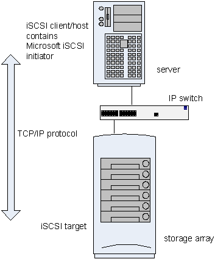
与之相反，异构IP SAN，如下图所示，包含在TCP/IP与光纤交换结构传输SCSI的组件。为了实现这一点，需要在IP与光纤通道之间安装连接桥或网关设备。连接桥用于TCP/IP与光纤通道之间的协议转换，因此iSCSI主机将存储看做iSCSI target。直接连接光纤通道target的服务器必须包含HBA而不是iSCSI主机的网络适配卡。iSCSI主机可使用NIC或HBA。
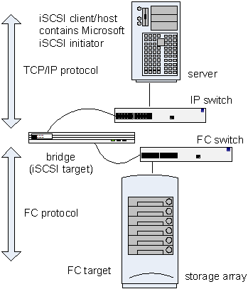
iSCSI 存储系统四大架构
控制器系统架构：
iSCSI的核心处理单元采用与FC光纤存储设备相同的结构。即采用专用的数据传输芯片、专用的RAID数据校验芯片、专用的高性能cache缓存和专用的嵌入式系统平台。打开设备机箱时可以看到iSCSI设备内部采用无线缆的背板结构，所有部件与背板之间通过标准或非标准的插槽链接在一起，而不是普通PC中的多种不同型号和规格的线缆链接。
控制器架构iSCSI存储内部基于无线缆的背板链接方式，完全消除了链接上的单点故障，因此系统更安全，性能更稳定。一般可用于对性能的稳定性和高可用性具有较高要求的在线存储系统，比如：中小型数据库系统，大型数据的库备份系统，远程容灾系统，网站、电力或非线性编辑制作网等。
连接桥系统架构：
整个iSCSI存储系统架构分为两个部分，一个部分是前端协议转换设备，另一部分是后端存储。结构上类似NAS网关及其后端存储设备。
前端协议转换部分一般为硬件设备，主机接口为千兆以太网接口，磁盘接口一般为SCSI接口或FC接口，可连接SCSI磁盘阵列和FC存储设备。通过千兆以太网主机接口对外提供iSCSI数据传输协议。
后端存储一般采用SCSI磁盘阵列和FC存储设备，将SCSI磁盘阵列和FC存储设备的主机接口直接连接到iSCSI桥的磁盘接口上。
iSCSI连接桥设备本身只有协议转换功能，没有RAID校验和快照、卷复制等功能。创建RAID组、创建LUN等操作必须在存储设备上完成，存储设备有什么功能，整个iSCSI设备就具有什么样的功能。
PC系统架构：
即选择一个普通的、性能优良的、可支持多块磁盘的PC(一般为PC服务器和工控服务器)，选择一款相对成熟稳定的iSCSI target软件，将iSCSI target软件安装在PC服务器上，使普通的PC服务器转变成一台iSCSI存储设备，并通过PC服务器的以太网卡对外提供iSCSI数据传输协议。
在PC架构的iSCSI存储设备上，所有的RAID组校验、逻辑卷管理、iSCSI 运算、TCP/IP 运算等都是以纯软件方式实现，因此对PC的CPU和内存的性能要求较高。另外iSCSI存储设备的性能极容易收PC服务器运行状态的影响。
PC+NIC系统架构：
PC+iSCSI target软件方式是一种低价低效比的iSCSI存储系统架构解决方案，另外还有一种基于PC+NIC的高阶高效性iSCSI存储系统架构方案。
这款iSCSI存储系统架构方案是指在PC服务器中安装高性能的TOE智能NIC卡，将CPU资源较大的iSCSI运算、TCP/IP运算等数据传输操作转移到智能卡的硬件芯片上，由智能卡的专用硬件芯片来完成iSCSI运算、TCP/IP运算等，简化网络两端的内存数据交换程序，从而加速数据传输效率，降低PC的CPU占用，提高存储的性能。
2.5.3 第三部分
协议映射:
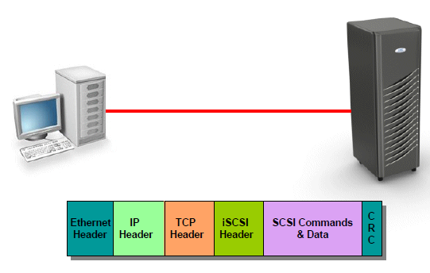
iSCSI协议是让SCSI协议在TCP协议之上工作的传输协议，是一种SCSI远程过程调用模型到TCP协议的映射。SCSI命令加载在iSCSI请求之上，同时SCSI状态和响应也由iSCSI来承载。iSCSI同样使用请求响应机制。在iSCSI 配置中，iSCSI 主机或服务器将请求发送到节点。 主机包含一个或多个连接到IP 网络的启动器，以发出请求，并接收来自iSCSI 目标的响应。 为每个启动器和目标都指定了一个唯一的iSCSI 名称，如 iSCSI 限定名 (IQN) 或扩展的唯一标识(EUI)。 IQN 是 223 字节的ASCII 名称。EUI 是 64 位标识。iSCSI 名称代表全球唯一命名方案，该方案用于标识各启动器或目标，其方式与使用全球节点名(WWNN) 来标识光纤通道光纤网中设备的方式相同。
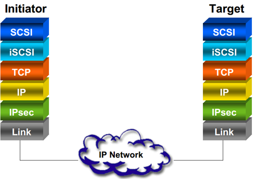
iSCSI 目标是响应 iSCSI 命令的设备。iSCSI 设备可以是诸如存储设备的结束节点，或者可以是诸如IP 与光纤通道设备之间的网桥的中间设备。每个iSCSI 目标由唯一的iSCSI 名称标识。
要通过 IP 网络传输 SCSI 命令，iSCSI 驱动程序必须安装到iSCSI 主机和目标中。驱动程序用于通过主机或目标硬件中的网络接口控制器(NIC) 或 iSCSI HBA 来发送iSCSI 命令和响应。
为实现最佳性能，请使用传输速度为每秒 1000 兆位 (Mbps) 的千兆以太网适配器在iSCSI 主机和 iSCSI 目标间进行连接。
iSCSI 命令封装：

发起端和目标端之间以消息的形式进行通信。PDU（Protocal Data Unit）就是用来传输这些消息的。
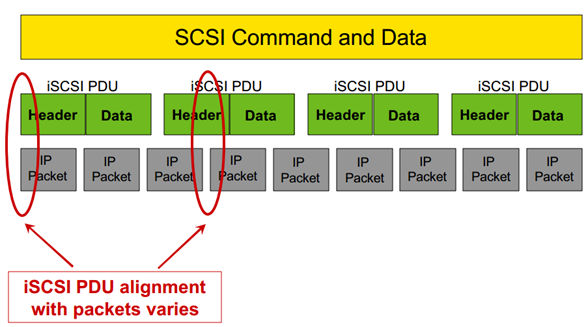
iSCSI 协议就是一个在网络上封包和解包的过程，在网络的一端，数据包被封装成包括TCP/IP头、iSCSI识别包和SCSI数据三部分内容，传输到网络另一端时，这三部分内容分别被顺序地解开。iSCSI 系统由一块 SCSI 卡发出一个 SCSI 命令，命令被封装到第四层的信息包中并发送。
接收方从信息包中抽取SCSI 命令并执行，然后把返回的SCSI命令和数据封装到IP信息包中，并将它们发回到发送方。系统抽取数据或命令，并把它们传回SCSI子系统。所有这一切的完成都无需用户干预，而且对终端用户是完全透明的。 为了保证安全，iSCSI 有自己的上网登录操作顺序。在它们首次运行的时候，启动器(initiator)设备将登录到目标设备中。
任何一个接收到没有执行登录过程的启动器的iSCSI PDU目标设备都将生成一个协议错误，而且目标设备也会关闭连接。在关闭会话之前，目标设备可能发送回一个被驳回的iSCSI PDU。这种安全性是基本的，因为它只保护了通信的启动，却没有在每个信息包的基础上提供安全性。还有其他的安全方法，包括利用IPsec。在控制和数据两种信息包中，IPsec 可以提供整体性，实施再次(replay)保护和确认证明，它也为各个信息包提供加密。
iSCSI 会话：
iSCSI 会话建立于一个initiator与一个target之间，一个会话允许多个TCP连接，并且支持跨连接的错误恢复。大多数通信还是建立在SCSI基础之上的，例如，使用R2T进行流量控制。iSCSI添加于SCSI之上的有：立即和主动的数据传输以避免往返通信；连接建立阶段添加登录环节，这是基于文本的参数协商。建立一个iSCSI会话，包括命名阶段：确定需要访问的存储，以及initiator，与FC不同，命名与位置无关；发现阶段：找到需要访问的存储；登录阶段：建立于存储的连接，读写之前首先进行参数协商，按照TCP连接登录。
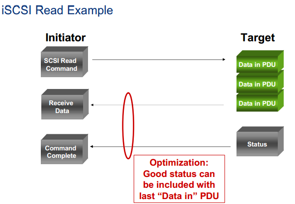
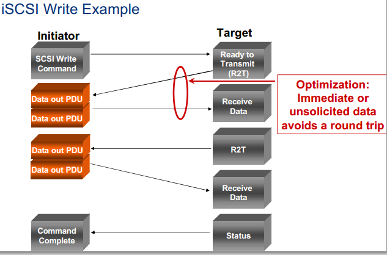
结构模式:
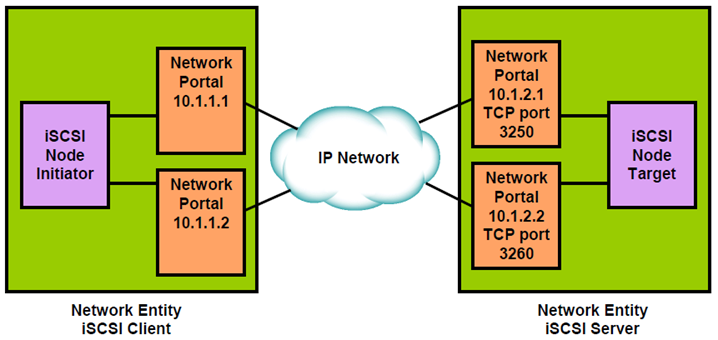
iSCSI有两大主要网络组件。第一个是网络团体，网络团体表现为可通过IP网络访问的一个驱动或者网关。一个网络团体必须有一个或者多个网络入口，每一个都可以使用，通过IP网络访问到一些iSCSI节点包含在网络团体中。第二个是网络入口，网络入口是一个网络团队的组件，有一个TCP/IP的网络地址可以使用给一个iSCSI节点，在一个ISCSI会话中提供连接。一个网络入口在启动设备中间被识别为一个IP地址。一个网络入口在目标设备被识别为一个IP地址+监听端口。
iSCSI端口组:
iSCSI支持同一会话中的多个连接。在一些实现中也可以做到同一会话中跨网络端口组合连接。端口组定义了一个iSCSI节点内的一系列网络端口，提供跨越端口的会话连接支持。
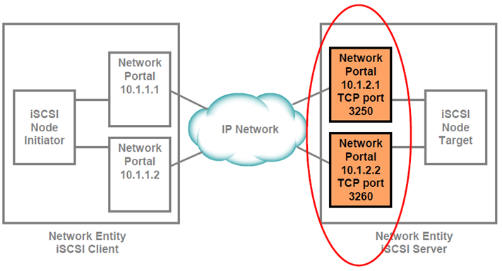
2.6 Fibre Channel光纤通道系统基础
2.6.1 第一部分
光纤通道技术（Fibre Channel）是一种网络存储交换技术，可提供远距离和高带宽，能够在存储器、服务器和客户机节点间实现大型数据文件的传输。了解光纤通道技术是了解网络存储的起点。
Fibre Channel的概念:
Fibre Channel (FC) 是一种高速网络互联技术（通常的运行速率有2Gbps、4Gbps、8Gbps和16Gbps），主要用于连接计算机存储设备。过去，光纤通道大多用于超级计算机，但它也成为企业级存储SAN中的一种常见连接类型。尽管被称为光纤通道，但其信号也能在光纤之外的双绞线上运行。
光纤通道广泛用于通信接口，并成为传统I/O接口与网络技术相结合趋势的一部分。Network运作于一个开放的，非结构化的并且本质上不可预测的环境。Channels通常运行在一个封闭的、结构化的和可预测的环境，该环境下所有与主机通信的设备都预先已知，任何变更都需要主机软件或配置表进行相应更改。通道协议如SCSI，ESCON, IPI。Fibre Channel将这两种通信方式的优势集合为一种新的接口，同时满足network和channel用户的需求。
Fibre Channel的目标与优势:
Fibre Channel要提供的是一个连接计算机和共享外围设备的接口，在这一技术提出之前是通过多种不同的接口来连接的，如IDE，SCSI，ESCON。
Fibre Channel需要提供大量信息的高速传输。

上图显示了2Gbps Fibre Channel与Escon和SCSI同等级下的传送速率对比。
除了速度增长以外，Fibre Channel也需要支持公里级的距离。通过光纤交换机实现，如下图所示：
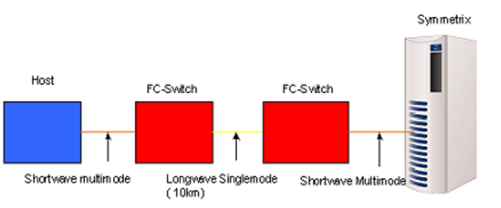
光纤通道还需要提供传输多种上层协议的能力，并维持这些上层协议的持续使用。光纤通道接口如下图所示：
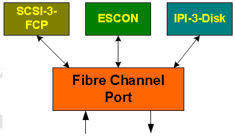
连接和扩展是光纤通道的一个主要目标，通过将数千个设备共享数据并连接在一起来实现。Fibre Channel支持交换光纤，一个光纤结构理论上可支持一千六百万地址。光纤结构可以从一个单一交换机开始，按照需求可添加更多交换机来实现扩展。
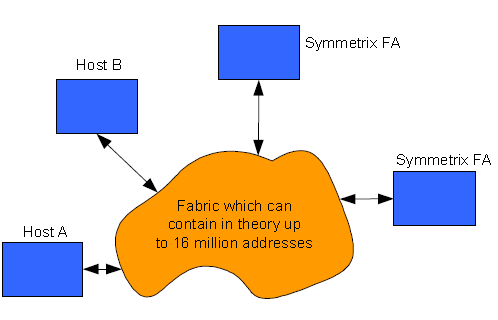
光纤通道还需要提供比例如SCSI形式更简单的线缆和插头。光纤线缆比传统SCSI铜线更易于管理，插头体积更小从而一个适配器端口密度更高。当使用光纤线缆时，系统安装更为简便。下图显示了Fibre Channel使用的LC插头。
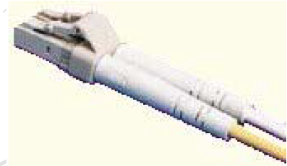
无中断安装和服务也是光纤线缆的一个要求。不同于铜线，在插拔时需要断电，光纤在上下电时无需担心瞬态损伤。
可靠性，可用性和可维护性一直是光纤通道协议的目标。与铜线相比它具有明显的优势：对电磁干扰和线间串扰不明显。
2.6.2 第二部分
节点（Node）:
光纤通道环境包括两个或更多通过互联拓扑连接在一起的设备。光纤通道设备如个人电脑，工作站，磁盘阵列控制器，磁盘和磁带设备都被称为节点。每个节点都是一个或多个节点的信息源或目的。以EMC为例节点可以是Symmetrix系统。每个节点需要一个或多个端口作为节点间通信的物理接口。端口是一个允许节点通过物理接口发送或接收信息的硬件附件。一些设备将这些端口集成，其他一些设备则使用可插拔端口如HBA。以EMC为例端口可以是Symmetrix FA适配器上的接口。
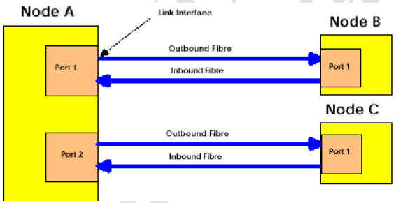
端口（Ports）:
每一个光纤通道节点包含至少一个硬件端口，将该节点与光纤通道环境连接，并处理与其他端口的信息。此端口称为节点端口。一个节点可以有一个或多个节点端口。按照端口支持的协议标准有以下几种不同类型的节点端口：
N_PORT：Node_ports既可以用在端到端也可以用在光纤交换环境。在端到端环境下N_ports发送端与接收端之间直接互连。举例来说，一个HBA或一个Symmetrix FA端口就是一个N_port。
F_PORT：Fabric_Ports用于光纤交换环境下N_port之间的互连，从而所有节点都可以相互通信。通常这些端口在交换机上，允许HBA和其他设备如Symmetrix FA连接到光纤。
NL_PORT：NL_Port是支持仲裁环路的节点端口。例如，NL_Port可以是HBA或Symmetrix FA端口。
FL_PORT：FL_PORT是支持仲裁环路的交换端口。通常是交换机上连接到仲裁环路的端口。
E_PORT：E_Port是一个光纤扩展端口，用于在多路交换光纤环境下。E_ports通常指一个交换机上连接到光纤网络另一个交换机的端口。
G_PORT：G_Port是一个既能配成E_Port又能配成F_Port的通用端口。是一种位于交换机上的端口。
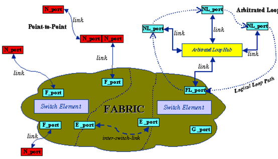
光纤（Fiber）：
端口通过链路连接至光纤网络。此链路包括线缆和承载两个独立光纤网络间收发信息端口的其他连接器。链路可能包括光导纤维或电缆。发送信号可能是长波光，短波光，LED或电子信号。光纤结构包括光传输的纤芯。纤芯包裹着覆层，功能是反射并控制光在芯内传输。纤芯和覆层由玻璃材质制造并且很容易被损坏。为了保护光纤避免受到物理损坏覆盖了更多保护层，以使光纤能够承受一定力度。并有一个光纤可弯曲的最小角度，在这个角度附近光纤将被弯曲，超过这个角度将会导致光纤传输信号衰减，最坏情况将导致光纤损坏。正常使用下线缆较为坚实并且除了要留意最小弯曲半径以外无需特别维护。芯径和外径（µm为单位）通常是光纤规格的定义方式。例如，62.5/125µm光纤，芯径为62.5µm外径为125µm。两根这样的光纤结合在一根双芯线缆中，两端有相应的双芯连接器。两根光纤以相反的方向发送和接收数据。双芯线缆允许同步发送和接收。
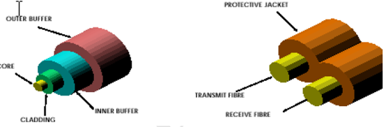
单模和多模（Single Mode and Multimode）：
光纤通道中有两种传输模式。
单模链路的芯径为9-10µm并且使用位于光谱红外部分约为1300纳米的长波光作为光源。此光对于人眼是不可见的。下芯径允许单模链路支持端口间最大10km的距离，所有光在光纤中沿着同一路径传输，如下图所示。单模链路主要用于长距离传输，应用于Symmetrix Fibre Channel适配器的几个版本。
多模链路相对于单模成本较低，用于无需单模那样远距离传输的场景。光纤通道链路通常基于50或62.5µm芯径并支持光波长约为800nm。这种相对于单模增加的芯径意味着光在光纤中有多种传播路径。
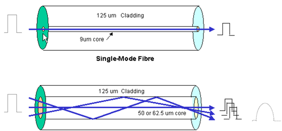
这就导致一种情况：某些频率的光在光纤中沿着一条路径传输而其他光沿着另一条路径，这种结果称为模态色散（Modal Dispersion）。这导致光呈放射状从而限制了多模线缆的距离。
网络（Fabric）：
术语Fabric用于光纤通道描述通用的交换或路由结构，该结构依据帧头的目的地址来传递帧。网络可能是端到端，交换光纤或是仲裁环路。
拓扑（Topology）：
光纤通道拓扑描述端口之间的物理互连。光纤通道支持三种不同的互连方案，称为拓扑结构。分别是点对点，仲裁环和交换结构。
2.6.3 第三部分
光纤通道提供了三种不同的拓扑结构和一个混合的互连拓扑结构。这些拓扑结构是：
- 端到端
- 光纤交换
- 仲裁环路
- 混合
端到端：
端到端拓扑是所有拓扑结构中最简单的一种，允许两个N_Port通过链路直接互连。各N_Port的发送端直接连至另一端口的接收端。此链路为这两个端口专用，访问链路无需特定协议，因此这两个端口完全占据链路带宽。
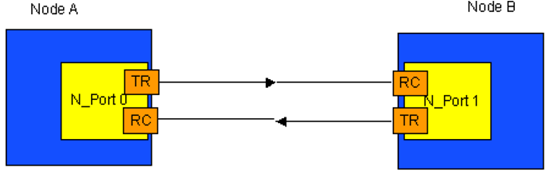
光纤交换：
端到端拓扑虽然很简单直观，但连接数量有限。这就导致了光纤交换技术的诞生，理论上支持一千六百万个端口（2^24）。交换网络可以包含单个交换机，或多个交换机互连作为一个逻辑整体。
每个N_Port通过相关链路连接至光纤网络端口（F_Port）。在光纤网络内各F_Port通过路由功能连接。这就使帧结构按照帧头的目标地址从一个F_Port路由至另一个F_Port。
多个并发连接可以同时在N_Port之间共存，因此，随着N_Port数量的增加，聚合带宽也在增长。
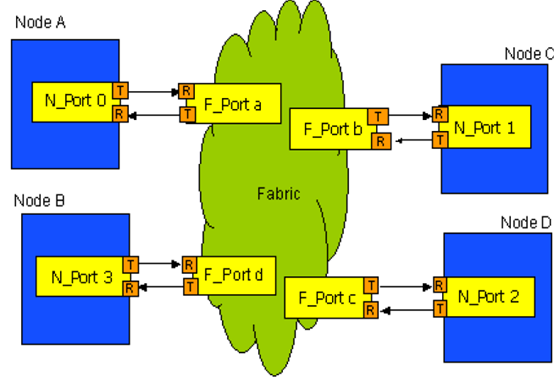
仲裁环路：
仲裁环路比端到端提供更多连接，可在一个回路上支持126个NL_Port和1个FL_Port，在端到端和光纤交换之间提供一个中间值。在仲裁环路中一个端口的发送输出连接至下一个端口的接收端，所有节点之间都有这样的连接直到形成一个闭合环路。如下图所示。这类配置通常使用光纤通道集线器从而无需使用线缆。仲裁环路中各端口在环路上发现所有消息并忽视/传递目的地非本端口的信息。
混合光纤：
光纤通道通过连接一个活多个仲裁环路到网络从而支持混合拓扑。这种方式结合了两种拓扑的长处。光纤网络拓扑提供连接选择和高聚合带宽，而仲裁环路拓扑提供低成本连接和共享带宽，而无需增加光纤交换机成本。
混合配置的好处在于仲裁环路上的NL_Port可通过交换机上的FL_Port连接光纤交换机上的N_Port，但需要进行必要的转换。这种转换包括将光纤网络地址转换成环路地址，以及将环路地址转换成光纤交换地址。该配置同时允许N_Port连接至仲裁环路上的NL_Port。
2.7 浅谈SDN和NFV的区别
EMC近日宣布成立新的NFV Group（Network Functions Virtualization Technology Group），并由联邦的核心智库CTO Office来直辖，EMC CTO Office的负责人John Roese在EMC PULSE博客中表示，EMC成立新的NFV Group，该部门成立的用意很明确，帮助运营商转型，助力它们迎接更为广阔的市场机遇。
SDN-诞生于校园，成熟于数据中心:
SDN初始于园区网络，一群研究者（斯坦福的达人们）在进行科研时发现，每次进行新的协议部署尝试时，都需要改变网络设备的软件，这让他们非常郁闷，于是乎，他们开始考虑让这些网络硬件设备可编程化，并且可以被集中的一个盒子所管理和控制，就这样，诞生了当今SDN的基本定义和元素
- 分离控制和转发的功能
- 控制集中化（或集中化的控制平面）
- 使用广泛定义的（软件）接口使得网络可以执行程序化行为
另一个SDN成功的环境就是云数据中心了，这些数据中心的范围和规模的扩展，如何控制虚拟机的爆炸式增长，如何用更好的方式连接和控制这些虚拟机，成为数据中心明确需求。而SDN的思想，恰恰提供了一个希望：数据中心可以如何更可控。
OpenFlow–驱动向前的标准：
那么，OpenFlow是从何处走进SDN的视野中呢？当SDN初创伊始，如果需要获得更多的认可，就意味着标准化这类工作必不可少。于是，各路公司联合起来组建了开放网络论坛（ONF），其目的就是要将控制器和网络设备（也就是SDN提到的控制平面和转发平面）之间的通讯协议标准化，这就是OpenFlow。OpenFlow第一定义了流量数据如何组织成流的形式，第二定义了这些流如何按需控制。这是让业界认识到SDN益处的关键一步。
NFV-由运营商提出：
和SDN始于研究者和数据中心不同，NFV则是由运营商的联盟提出，原始的NFV白皮书描述了他们遇到的问题，以及初步的解决方案。运营商网络的设备呈指数级的增长，越来越多各种类型的硬件设备不断的增加。当开展一个新的网络业务时，往往提出多样化的需求，寻找适合空间和电力去容纳这些“盒子”变得越来越困难。能耗的增加，资本投资的挑战，以及设计，集成和运行这些日益复杂的基于硬件的平台所需要的技术这些种种挑战复合在一起。另外，基于硬件平台的很快就有可能到达其生命周期，需要重复大量的采购–设计–集成–部署周期，也只能获取少量利润收益，甚至可能没有收益。
网络功能虚拟化的目标是使用标准的IT虚拟化技术，把现在大量的位于数据中心，网络节点以及最终用户处的这些不同类型网络设备–标准的服务器，交换机和存储设备集合在一起。我们相信网络功能虚拟化可以适用于任何数据平面的包处理，控制平面的功能集成，以及无线网络的基础架构中。
SDN vs NFV：
现在，让我们看看SDN和NFV的关系，原始的NFV白皮书给出一个SDN和NFV关系的概述
如图所示，网络功能虚拟化和软件定义网络有很强的互补性，但是并不相互依赖（反之亦然），网络功能虚拟化可以不依赖于SDN部署，尽管两个概念和解决方案可以融合，并且潜在形成更大的价值。
依赖于应用在大量数据中心内的现有技术，网络功能虚拟化的目标可以基于非SDN的机制而实现。但是，如果可以逐渐接近SDN所提出的将控制平面和数据平面的思路，那么就能进一步使现有的部署性能增强且简化互操作性，减轻运营和维护流程的负担。网络功能虚拟化为SDN软件的运行提供基础架构的支持，未来，网络功能虚拟化可以和SDN的目标紧密联系在一起—-使用通用的商业性服务器和交换机。
SDN和NFV协同工作？：
让我们看一个SDN和NFV协同工作的案例，首先，下图展示了当今路由器服务部署典型案例，在每个客户站点使用均使用一台路由器提供服务：
如下图所示，使用虚拟路由器的功能，NFV就可以在这个场景中展现作用，所有的用户站点左侧都是一个网络接口设备（NID）–虚拟路由器，提供网络的分界点，并且测量性能：
最终，SDN被引入进来，将控制平面和转发平面分割，数据包将会根据更优化的数据平面被转发，路由（控制平面）功能则运行在某机柜服务器的虚拟机内。
SDN和NFV的结合提供了最优的解决方案
- 一个昂贵的专业设备被通用硬件和高级软件替代
- 软件控制平面被转移到了更优化的位置（从专用设备硬件中剥离，放置在数据中心或者POP位置，可能以服务器或者虚拟机的形式存在）
- 数据平面的控制被从专有设备上提取出来，并且标准化，使得网络和应用的革新无需网络设备硬件升级
汇总：